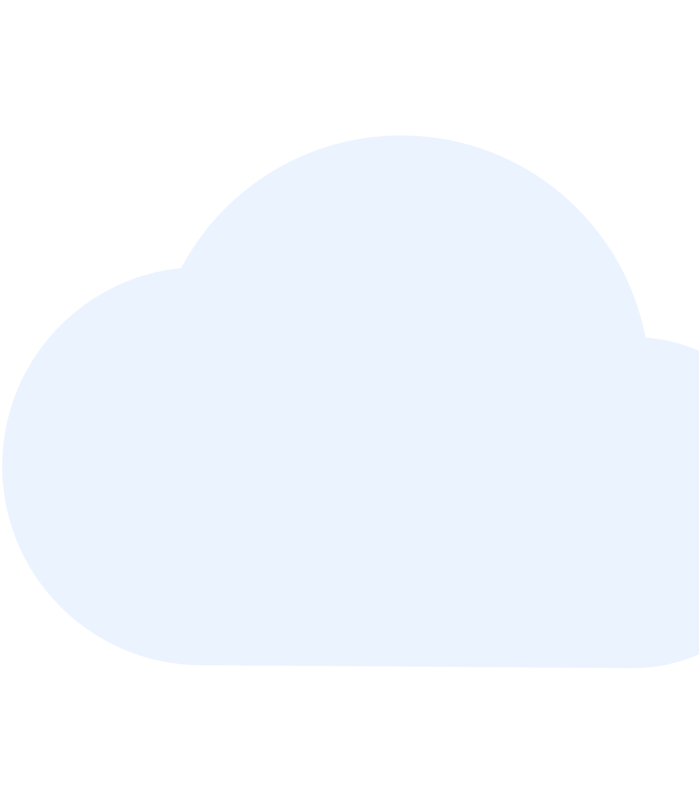

Policloud
Découvrez les mots les plus employés par vos politiciens !
Quel nuage recherchez-vous ?
Par politiciens
{politiciens}
Par courant Politique
{courants}
Par décennie
{decenies}
Le nuage de tout les discours depuis 1975
{tout}